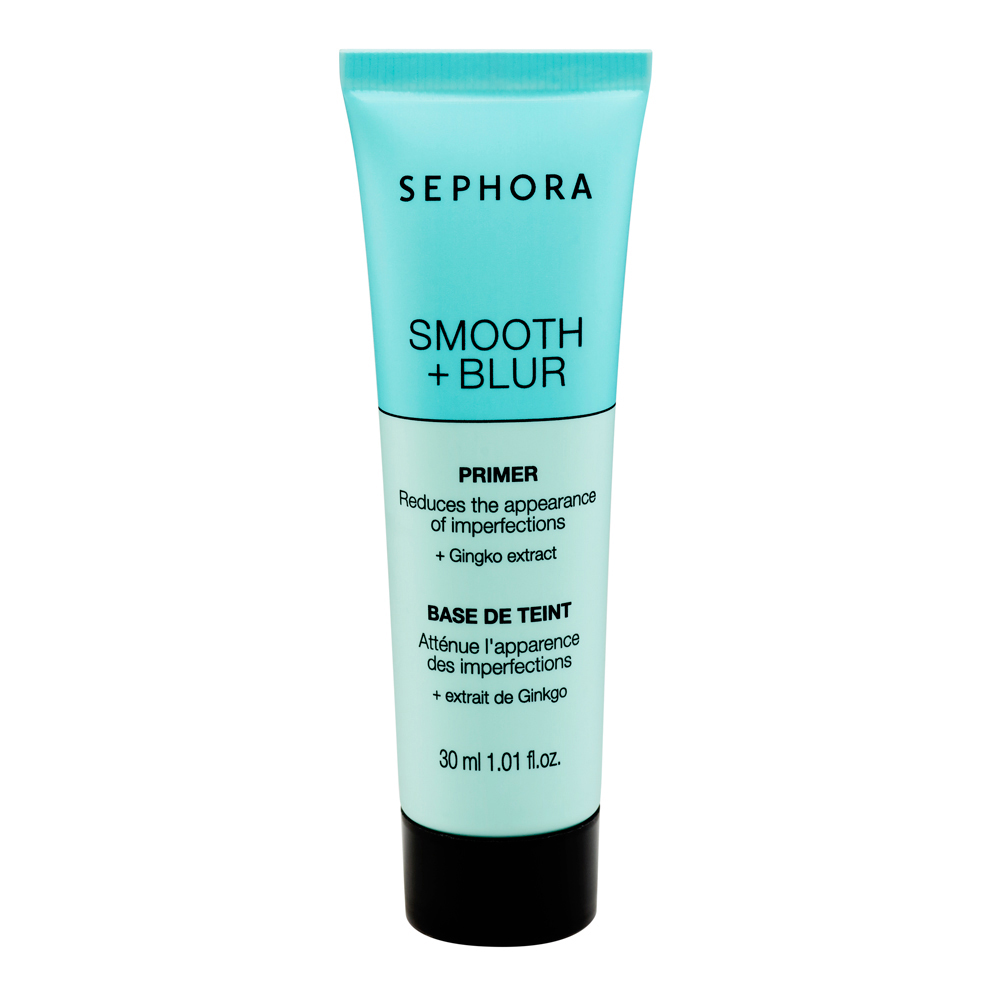

What it is
A blurring face primer with a velvet-matte finish. Optical diffusers soften the look of pores while polymers help makeup adhere evenly, so your base doesn’t slide by noon.

The canvas your complexion deserves. This gel-cream primer visually blurs pores and fine lines, controls shine in the T-zone, and creates a tacky-yet-comfortable grip so foundation lasts longer and looks smoother.
$28.00
30 mL / 1.0 fl. oz.
Formula
A blurring face primer with a velvet-matte finish. Optical diffusers soften the look of pores while polymers help makeup adhere evenly, so your base doesn’t slide by noon.
Apply a pea-sized amount after skincare, before foundation. Press into the T-zone and anywhere pores show. Wait 60 seconds until slightly tacky, then apply base. Use alone on no-makeup days for a filtered-skin effect.
Mix a drop with your foundation for a sheer, skin-like tint with built-in longevity. Avoid over-applying. More product won’t mean more blur, just more pilling.